If you are reading this within your very own copy of this GitHub repository (because you followed the link from the github classroom), then read on. If you are reading this offline, then please set up the Github account before you do anything else.
Before you do anything with your new GitHub account do this:
Go to your account settings and put in your full name
Add a picture or avatar of yourself
Go to settings and change the name of your repo (you can use the name of your play, but this may conflict with others, so include your publisher or surname as well example: blades-macbeth)
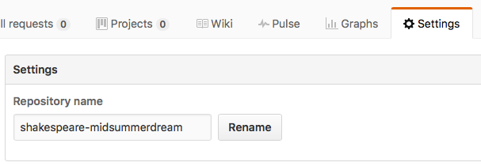Change the name of your repo
You don't need GitHub.com for the moment, apart from reading this text, but you will need to recall your username and password during the next steps.
Your digital tools
You will need a text editor that can show and preview web HTML. We now want you to download and install Atom. You can find this free open source editor here
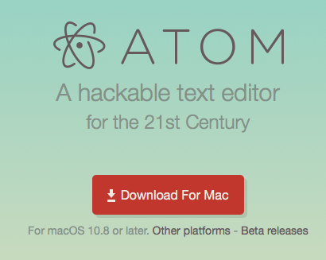Download Atom
This application will be placed inside your downloads folder, so you need to copy to your Applications folder inside you user account on the MAC. This means that you should try to use the same MAC in Tonge whenever possible.
You can also install this on your own computer at home.
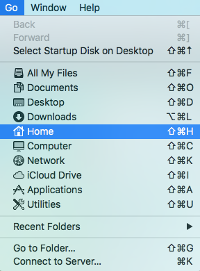Finding your Applications folder
Your Applications folder is inside your Home folder; find this by selecting Go from the finder menu. You can copy or move the Atom app from the downloads folder.
Atom will now be available but we now need to move to the next stage.
Configuring Atom
Atom is open source, so this means there are lots of packages that can be added to provide extra functionality. What follows is rather advanced, so don't worry if you can't do this; it is only another option.
Here are a few packages that will prove useful:
Atom HTML Preview
toolbar (suda)
You can optionally use Atom to update your GitHub repository that is online. To do this you need to install this package:
Git-Plus
Then in the terminal window copy and paste this:
git config --global credential.helper osxkeychain
You should now be able to push your updates direct to GitHub and see the results on your web site.
The MACs have installed an application called GitHub Desktop. Find this in the launchpad. If you want to install this on your own computer, it is free and comes from here
Open the GitHub Desktop APP
It will show a tutorial that you can come back to if you wish.
You now need to login with your GitHub account
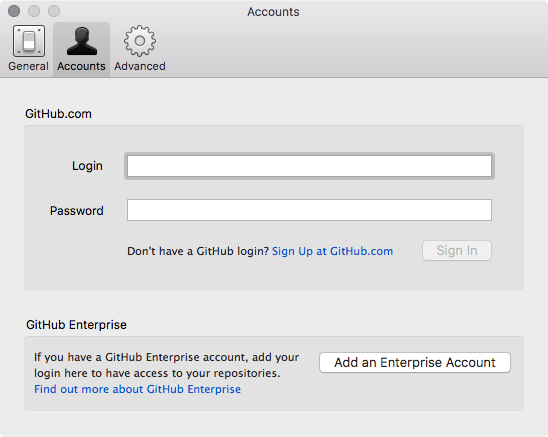Login Details from GitHub
Once you have done this you can now clone the repository that is in your GitHub account online by selecting the + sign. All being well you should see something similar to this here:
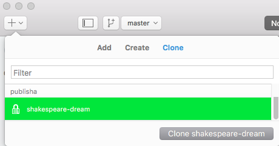Choose you repo
You will be asked where to put it…. your Google drive is best! Stay in the GitHub desktop app:
In the GitHub desktop right-click over the repo name in the left sidebar and select Open in Atom
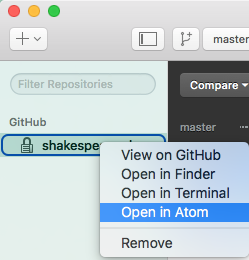Open in Atom
You should see something like this:
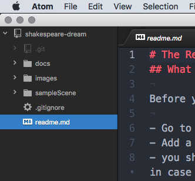Atom editor
What's inside the repository?
When you download this repository, you will find a variety of files, but the 2 important ones are inside the docs folder:
index.xhtml - this will become the home page for your play. This page will have the cover image.
play.xhtml - this is where the text of the play will be. Linked from the home page above.
styles.css - this is where you define the styles for the elements in the play
You can also have a look at the sample scene inside the sampleScene folder
Also inside the resources folder you will find various InDesign scripts. These scripts needs to go into your copy of InDesign. The instructions are available here.
Ok, so what do I do now?
Here are the steps to take:
Open InDesign and find your final version of the play (only the play - not the Introduction)
Make any corrections that you like (consider the comments from the previous assignment)
If you created any new styles you will need to go to the style panel and configure the Export Tags feature.
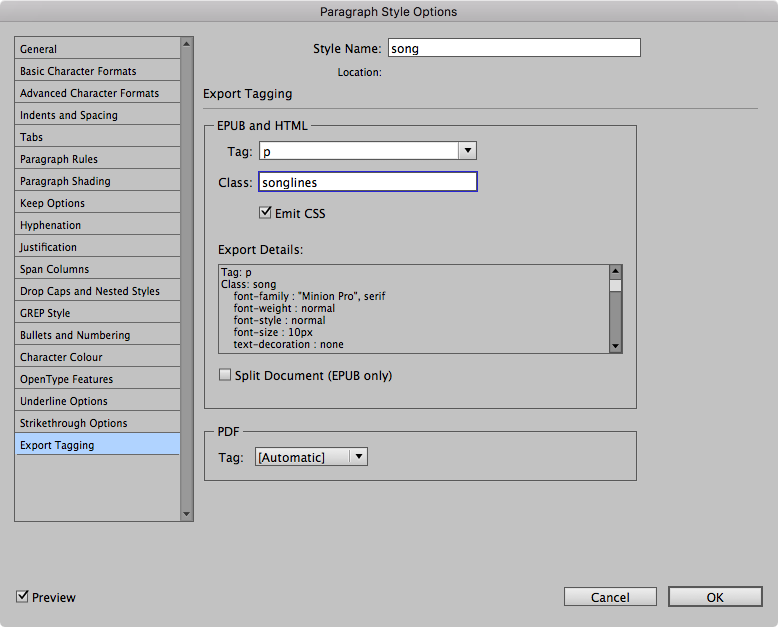Export Tagging
Now run the script (export_XHTML). You should see something like this:
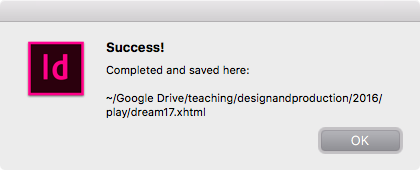Running the script export to XHTML
You will find that you have now got a new file saved wherever your InDesign file was saved. You can drag this file into your working copy of the repo that you have open in Atom.
The Play
In Atom it will look similar to this:
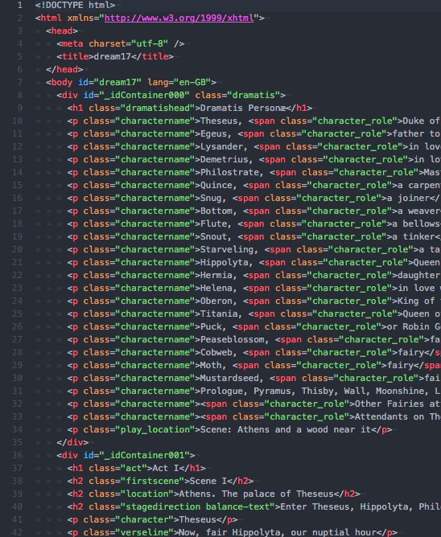XHTML version of the play
Copy all of the lines including the <body> opening and closing tag. You can make this easier by collapsing the body tag:
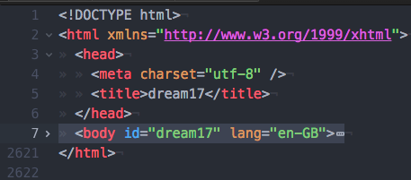Copy the body tag when collapsed
Open the play.xhtml file that is inside the docs folder (that you have from your repository) with Atom
Paste into this file and overwrite the <body> tag as per the instructions in that file.
Now edit the style.css file (again inside the docs folder) to style each of the elements in the play
Review in a web browser
Validate the XHTML file here: https://validator.w3.org
Validate the CSS file here: https://jigsaw.w3.org/css-validator/
The home page cover
You now need the cover image from the book.
You can open the PDF of the cover in Photoshop and crop down to the front of the cover. In other words, remove the back and spine.
The cover image needs to be 1400 pixels wide, because we need this later for the eBook.
save this image as a JPEG in the images folder within the docs folder in your repository that you downloaded from GitHub.
Now edit the index.xhtml file and put the file name of the image where instructed in the markup. Also edit the ALT tag text.
When you view this index.xhtml file the image will be very large, so you must edit the styles.css file to change the width of the image.
when viewed in a browser, this image will be a link to the play.
check that these work.
Making the web site work
When you are happy with the look of these web pages then you can: - Upload these new versions of these files to your GitHub repository - You do this by using GitHub Desktop and select Sync top right. - In GitHub go to settings for your repository - Under GitHub Pages choose the docs folder for the source
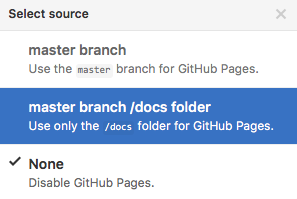docs
Your web page for the play will be live!
When you have finished and are ready then post the URL of your site to the moodle assignment location.
Please note: all of this will be demonstrated in class and there will also be a screencast available